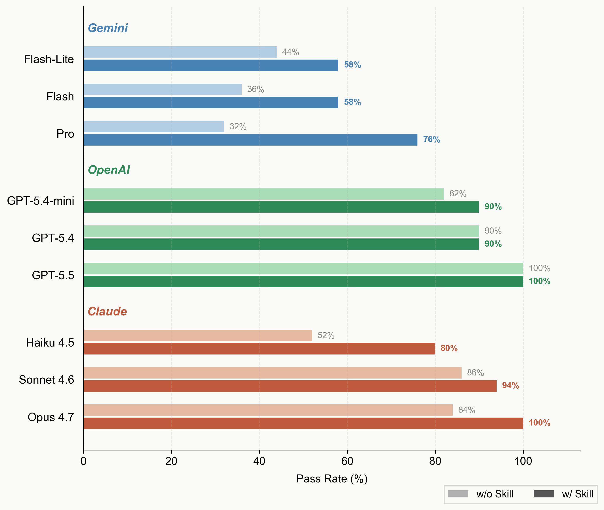

2026.05.14 · Seokhyun Choung · Pass Rate Dashboard
50-task benchmark injecting a 250-line ASE (Atomic Simulation Environment) skill into 9 LLMs across 3 providers (Gemini, OpenAI, Claude). Tasks span 3 difficulty levels: L1 (basic structure building), L2 (intermediate calculations and analysis), and L3 (advanced multi-step workflows). Each task is tested under two conditions: Vanilla (no skill) and +Skill (with the ASE skill injected). Performance is measured by Pass Rate (successful executions / total tasks).
Pass Rate = fraction of successful executions (returncode==0). 50 tasks x 9 models x 2 conditions (Vanilla / Skill v3).

Key finding: The ASE skill has the largest effect on Gemini Pro (+44%p) and Opus 4.7 (+16%p).
GPT-5.5 already achieves 100% vanilla, making the skill unnecessary. Haiku 4.5 gains +28%p with the skill.